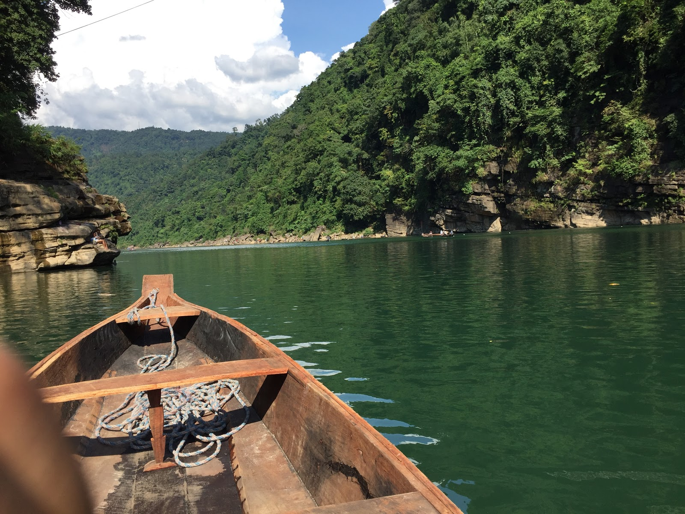
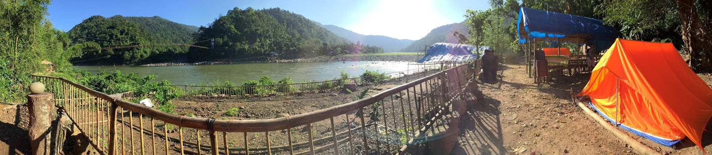

Dawki - And the Bangladesh Border
ALWAYS DO WHAT YOU ARE AFRAID TO DO. ~ RALPH WALDO EMERSON

Boat Ride in Dawki River
It was 11th of October 2017, I had already been tired with solo journey and exhausting treks of Cherrapunji. I had planned to travel to Dawki today. It was hardly 90Kms from here and Google Maps kept me informed that it won't take you more than 3 hours to reach the spot. I had planned to stay at a camp in Dawki and had already called Pyndap, who was going to help me with my stay in Shnongpdeng which was the major camping coast point along Dawki river.
So before starting for Dawki, I gave good rest to my body and checked out at standard time. Had brunch on the way and left for Dawki to experience the point where Indian borders handovers the river to Bangladesh. It was already 3pm when I reached Mawmyrsiang and got confused which route to follow. When coming from Cherrapunji, there is a bypass via Nonglim which cuts down the travel time and distance to Dawki while the outer highway route was Umtyngar. In 2017, the bypass had started to build with no road and no vehicles passing by though that lush green villages.
I thought to take a chance and started moving, on seeing the dark jungle before dawn, I got scared and thought to take the main road instead. So I took a U-turn after travelling like 3 km on the bypass. Sometimes in life when you are alone, you have to take a longer route cause adventure and safety should go hand in hand. But when I returned back to the main road I saw few Taxi's carrying tourist taking the bypass, so I again took a U-turn and followed the Taxis instead of being alone on the bypass. It was scary and thrilling at the same time.
By 4.30pm, I was in Dawki. Yeah, I got late cause I was strangled in thoughts for choosing the right and safe journey. Also, when traveling to Dawki there were times with plain old farms and no humans around. No vehicle, no animals and not even internet for streches like 10kms. On seeing the Indian Military, I felt relieved.
Since, I didn't have much planned I did boating in the cleanest river and enjoyed the sunset. Also, there is a market for exchange between India and Bangladesh border running on boats. I enjoyed the evening and went to my camp later.

Camping along Dawki River in Shnongpdeng
After an exciting day, I met Pyndap and his friends, Lur Talang and others. We shared some drinks and enjoyed great non-vegetarian food along the Dawki river with conversations around great music that Meghalaya has seen.
The next day was so warm and good, I planned to return to Shillong and prepare for my journey back to Lucknow.
Also, here is a link to a song which that helped me writing this post.
Crosstown Traffic by Jimi Hendrix